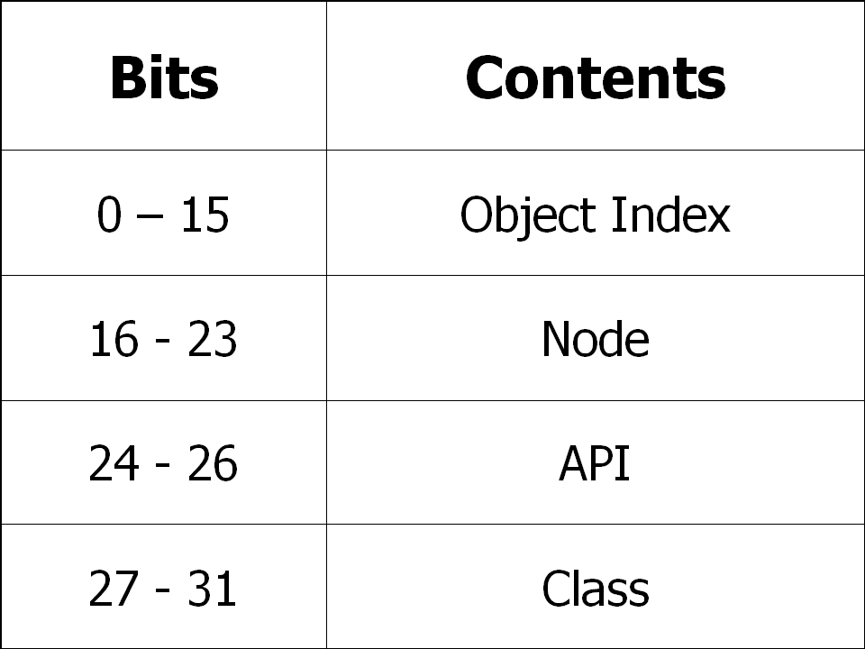

RTEMS Ada User's Guide
RTEMS Ada User's Guide
The thirty-two bit format for an object ID is composed of four parts: API,
object class, node, and index. The data type rtems.id
is used to store object IDs.

The most significant five bits are the object class. The next three bits indicate the API to which the object class belongs. The next eight bits (16-23) are the number of the node on which this object was created. The node number is always one (1) in a single processor system. The least significant sixteen bits form an identifier within a particular object type. This identifier, called the object index, ranges in value from 1 to the maximum number of objects configured for this object type.


 RTEMS Ada User's Guide
RTEMS Ada User's Guide
Copyright © 1988-2008 OAR Corporation